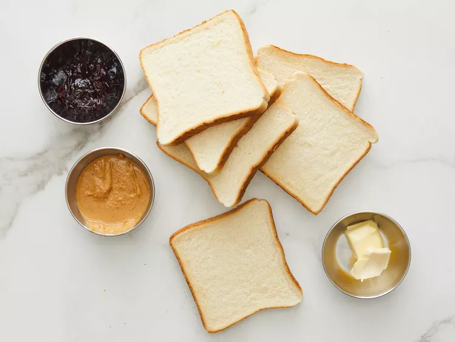

Grilled Peanut Butter and Jelly Recipe

Description
A perfect childhood snack with four simple ingredients.
Ingredients
- 2 teaspoons of butter
- 2 slices of white bread
- 2 teaspoons any flavor fruit jelly
- 1 teaspoon of peanut butter
Steps
- Gather all ingredients
- Heat a griddle or skillet to 350 degrees F (175 degrees C)
- Spread butter on one side of each slice of bread.
Spread jelly on the unbuttered side of one slice of bread:
spread peanut butter on the other unbettered side.
- Place bread slices together, so peanut butter and jelly are in the middle.
- Cook on the preheated griddle until golden brown and heated
through, about 4 minutes per side.